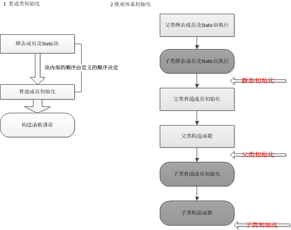

五、初始化与清理
5.1 用构造器确保初始化
默认构造器（无参构造器）：不接受任何参数的构造器。
Ex2
创建一个类,它包含一个在定义时就被初始化了的String域,以及另一个通过构造器初始化的String域。这两种方式有何差异？
不同：
s1的域在构造器初始化之前就已经被初始化了，s2的域这时候也被初始化为null，只不过在构造器中又被初始化了一次，即初始化2次。而且通过构造器初始化这种方式更加灵活。
5.2 方法重载
区分重载的几个方法：
- 参数列表不同
- 参数顺序不同（不建议）
- 返回值不同（行不通）
5.3 默认构造器
如果已经定义了一个构造器（无论是否有参数），编译器就不会帮你自动创建默认构造器。
例如：
5.4 this关键字
编译器会暗自把“所操作对象的引用”作为第一个参数传递给方法。this关键词只能在方法内部使用，表示对“调用方法的那个对象”的引用。this的用法和其他对象引用并无不同。
• 如果在方法内部调用同一类的另一个方法，不必使用this，直接调用即可。当方法需要返回当前对象的引用时才需要明确使用this，如需要返回当前对象时。
• 如果要将当前对象传递给外部的方法，this关键词就很有用。
• 可能为一个类写了多个构造器，想在一个构造其中调用另一个构造器，以避免重复代码。this关键字可以做到这一点。
尽管可以用this调用一个构造器，但不能调用两个。此外，必须将构造器置于最起始处，否则编译器会报错。
除了构造器外，编译器禁止在其他任何地方调用构造器。
static方法是属于类的，所以里面不能用this关键字。static方法的内部不能使用非静态方法，反过来倒是可以的。
5.5 清理：终结处理和垃圾回收
1. 对象可能不被垃圾回收
2. 垃圾回收并不等于“析构”
3. 垃圾回收只与内存有关系
finalize()
Java中finalize()的作用一主要是清理那些对象(并非使用new，比如调用了native方法)获得了一块“特殊”的内存区域。Java有垃圾回收器负责回收无用对象占据的内存资源。但也有特殊情况：假定你的对象(并非使用new)获得了一块“特殊”的内存区域，由于垃圾回收器只知道释放那些经由new分配的内存，所以它不知道该如何释放该对象的这块“特殊”内存区域，为了应对这种情况，java允许在类中定义一个名为finalize()的方法。它的工作原理“假定”是这样的：一旦垃圾回收器准备好释放对象占用的存储空间，将首先调用其finalize()的方法。并且在下一次垃圾回收动作发生时，才会真正回收对象占用的内存。所以要是你打算用finalize()，就能在垃圾回收时刻做一些重要的清理工作。注意这里的finalize()并不是C++里的析构.在C++中，对象一定会被销毁，而在Java里的对象却并非总是被垃圾回收。
垃圾回收只与内存有关。也就是说，使用垃圾回收器的唯一原因是为了回收程序不再使用的内存。所以对于与垃圾回收有关的任何行为来说(尤其是finalize()方法)，它们也必须同内存及其回收有关。
在C++中，所有对象都会被销毁，或者说，应该被销毁。但是在Java中，无论是“垃圾回收”还是“终结”，都不保证一定会发生。如果Java虚拟机（JVM）并未面临内存耗尽的情形，它是不会浪费时间去执行垃圾回收以恢复内存的。
finalize()有一个有趣的用法，它并不依赖于每次都要对finalize()进行调用，这就是对象终结条件的验证。
例如：
这个例子的终结条件是：
所有的Book对象在被当做垃圾回收前都应该被签入（check in）。但在main()方法中，由于程序员的失误，有一本书没有被签入。要是没有finalize()来验证终结条件，就很难发现这个缺陷。
5.5.4 垃圾回收器如何工作
垃圾回收器如何工作:
举一个生活中的例子。你在一个屋子里生活一段时间之后会产生很多垃圾，使你必须清理。清理包括扔掉生活垃圾和自己几乎用不着的东西。
垃圾回收器最简单的方法就是引用计数：当有引用连接至对象的时候，引用计数加一。垃圾回收器遍历全部的对象。当发现有计数为0的对象时就释放。但是每当对象循环调用时会出现应该被回收，但是计数不为0的现象。这就像你收拾屋子时总觉得这个东西还有用其实它对于你没有什么用那样。显然这种方式是不可用的。
实际上虚拟机采用的回收思想是;每一个活的对象都可以追溯到它存活的堆栈或者静态存储区的引用。因此从堆栈或者静态存储区开始遍历就可以找到所有活着的对象。在这种方式下采用了自适应的垃圾回收机制：
1.停止–复制机制：先暂停程序的运行然后将活的对象从一个堆栈复制到另一个堆栈中，没有复制的都是垃圾将被回收。显然这种方式的缺点还是比较明显的，首先要暂停程序，另外在程序稳定之后几乎不产生垃圾的情况下仍旧会进行大量的复制。这是一种没有必要的浪费。
2.标记–清扫：标记每一个活着的对象，在清理时不清理他们。但是这样做的缺点是存储空间不是相连成块的。
虚拟机通常都把这两种方式结合来用，在没有新的垃圾产生的时候就从停止–复制模式切换到标记–清扫模式。这样避免了二者的缺点。
在虚拟机中内存都以块的形式分配，在垃圾回收时停止–复制机制向已经废弃的块中拷贝新的对象，由于程序的进行，会出现更替，所以每个块都有自己的代数来记录它是否存活。每次回收之后都进行整理，这样垃圾回收就会对大量的短命的临时对象进行回收。
因此现行的垃圾回收应该被称呼为“自适应的，分代的，停止–复制，标记–清扫”式垃圾回收器。
有些时候我们可能会使用非new形成的内存，这时java中有一个方法为finalize()，每当垃圾回收器启动的时候，会首先调用这个方法，并且在下一次垃圾回收发生的时候才会真正回收对象。这个时候我们需要finalize()来验证终结条件并且调用system.gc()这个方法来进行终结动作。
5.6 成员初始化
Java尽力保证：所有变量在使用前都能得到适当的初始化。对于方法的局部变量，如果没有被初始化，就会以异常的方式来提醒。
类的数据成员是基本类型时，就会有默认的初始值。
在类里定义一个对象引用时，如果没有对它进行初始化，此引用就会得到一个特殊值null。
5.7 构造器初始化

5.8 数组初始化
int[] a1;这只是一个数组引用。
第一种初始化方法
代码：123Integer[] a = new Integer[2];//对于非基本类型，此时只是创建了一个引用数组，必须对数组中的每个元素创建对象a[0] = new Integer(1);a[1] = new Integer(2);第二种初始化方法
代码：1Integer[] a = {1,2,};
- 第三种初始化方法
代码：1Integer[] a = new Integer[]{1,2,};
第二、三种方法中最后一个逗号是可选的。在方法调用的内部都可以使用第三种方式：
|
|
5.8.1 可变参数列表
Java SE5中开始提供可变参数列表。代码如下：public void name(Object...args);
可变参数：
1. 参数个数或者类型未知
2. 必须位于参数列表末尾
当指定参数时，编译器实际上会为你去填充数组。可以直接将数组传递给可变参数列表。0个参数的可变参数列表也是可以的。
当方法重载时，如：
上述代码重载了name方法，当使用name()编译器无法知道调用哪个方法，无法编译。你应该总是只在重载方法的一个版本上使用可变参数列表，或者根本不使用
5.9 枚举类型
Java SE5中添加了enum关键字，详细的enum用法在19章将会提到。
• toString()：获得某个enum实例的名字
• ordinal()：获得某个enum实例的声明顺序
• 静态方法values()：用来按照enum常量的声明顺序，产生由这些常量值构成的数组。